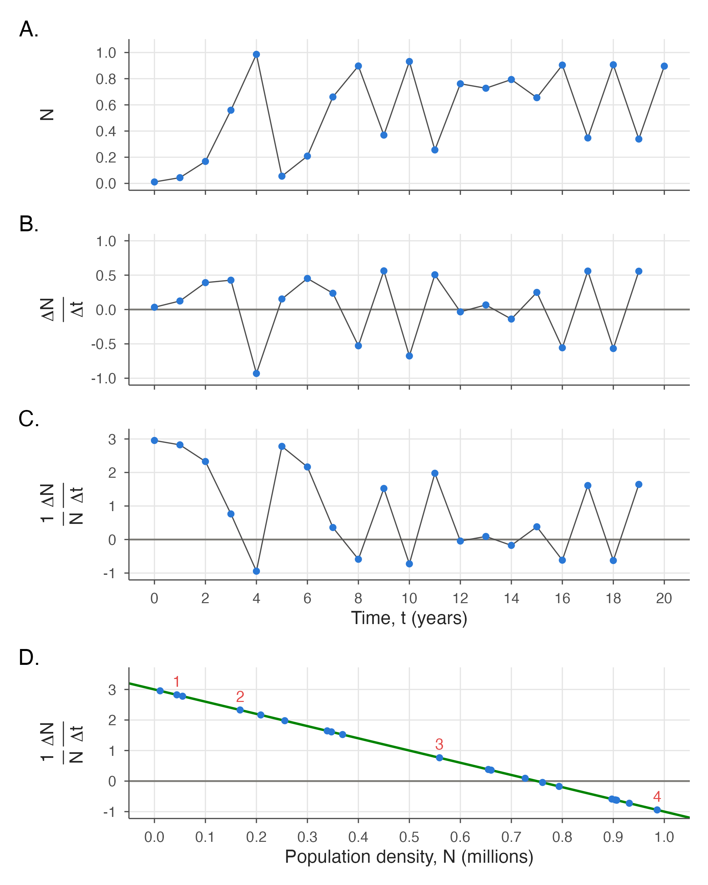
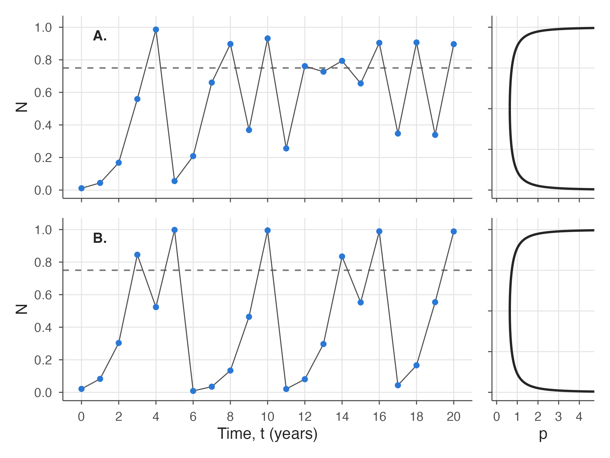
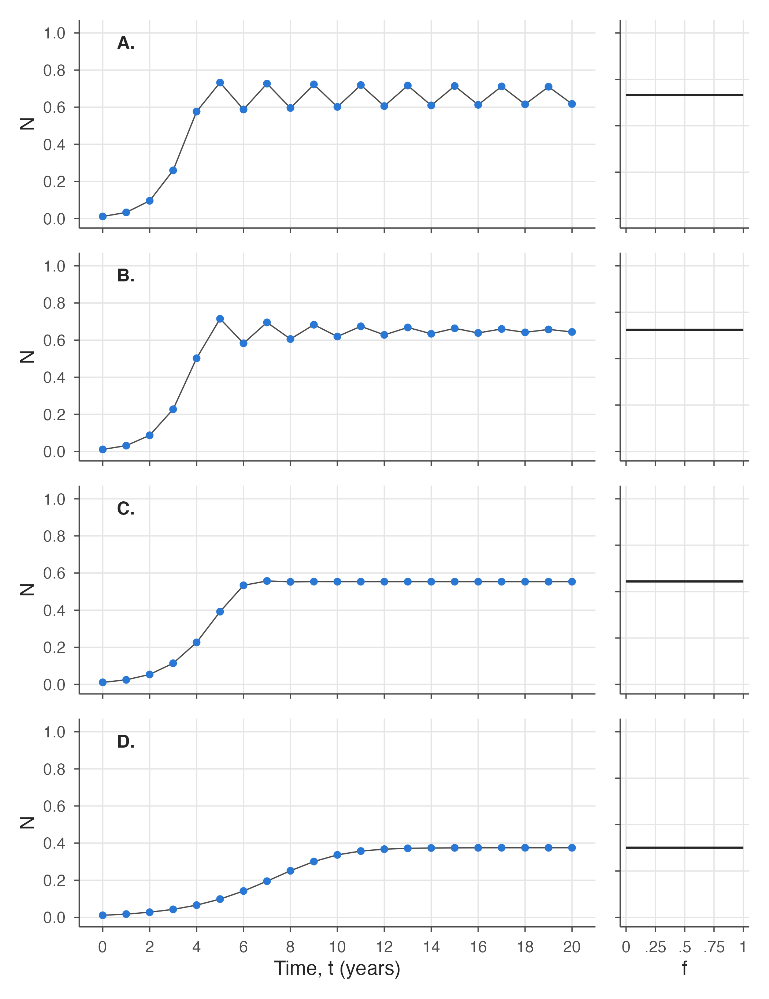

In the density-limited growth examined thus far, the ecological effects of density fed back quickly enough that the population’s growth could adjust and the population could reach a carrying capacity, equal to \(-r/s\). But if the growth rate is too fast compared with that feedback, the population can overshoot its carrying capacity, which can lead to highly complex outcomes.
Think about feedback in this way. Imagine driving down the road, keeping your eye on the road, instantly correcting any little deviations of your car from your lane, adjusting the steering wheel without even perceiving it, and with only normal blinking of your eyes. In this case there is very little delay in your feedback to the steering wheel, and you stay in the lane. Now suppose you close your eyes for one second at a time, perhaps every ten seconds. (Do not run this experiment; just think about it!) You may have drifted a bit to the left or right in that second and would have to turn the steering wheel further to get back in your lane. And now imagine shutting your eyes for 15 seconds every minute, then opening them and correcting your path down the road. You’ll start oscillating in your lane and precariously jerking back and forth, possibly visiting the ditch. The cause? The delay in the feedback between stimulus and response.
So it is with populations. Delays in sensing the carrying capacity can start oscillations. For example, a modelled insect population that grows and lays eggs one year and emerges the next year can suffer such oscillations. The insects are, in effect, “keeping their eyes shut” about how many insects will be produced the next year. This is in contrast to species like bacteria or humans, where the population grows more or less continuously.
7.1 Depicting population growth
Figure 7.1 shows four approaches to depicting populations. While not all equally helpful, each has its use. Let’s start with phenomenological graphs for a single species: graphs that merely depict the population phenomena observed without attempting to describe the mechanisms causing the phenomena. Observations might come from successive bacterial plate counts or censuses of people or, in this case, successive insect censuses. Part A in the figure represents the whole population \(N\) over time, and is a starting place to view population change. Similarly, Part B represents the whole population’s rate of growth, \(dN/dt\), over time, also phenomenological.
Figure 7.1: Population growth viewed four ways. (A,B) Phenomenological. (C,D) Mechanistic.
A touch of biology is introduced in Part C by transforming the vertical axis to per-capita growth, \(1/N\,dN/dt\). This transformation recognizes the growth rate that an individual organism achieves in a unit of time—say in a year or a week—under prevailing conditions. There is a nominal biological limit on the number of offspring produced by an individual in each unit of time—one new bacterium per individual bacterium in twenty minutes, say, or four goslings per family of geese in a year, or one infant per human family each year. This subtle amount of biology can reveal patterns not evident in the phenomenological approaches of Parts A and B—that the number of surviving offspring per individual increases with time for orthologistic growth, does not change for exponential growth, and decreases with time for logistic growth.
Finally, in Part D, a touch of ecology is added to the biology of Part C by considering, on the horizontal axis, interactions among organisms. This shows per-capita growth rate versus population density \(N\), rather than versus time \(t\). And it reveals even more clearly the ecological mechanism behind the phenomena and the distinct nature of the three kinds of population growth—orthologistic growth appears as a straight line slanted upward (as in Figure 6.2), exponential growth as a straight horizontal line, and logistic growth as a straight line slanted downward (as in Figure 6.3). Population density \(N\) acts a proxy for space, food, or other resources or limits.
7.2 Hypothetical insect data
For a detailed illustration of the methods used in these four graphs and an illustration of population oscillations, consider the hypothetical insect data in Table 7.1. Insects often have one-year reproductive cycles; these can be prone to oscillations, and also are known for “outbreaks” (e.g. of disease, or of pests).
The data in Table 7.1 were generated by the difference equation
with \(r=3\) and \(s=-4\). This is the discrete-time logistic equation—Equation 4.1 of Chapter 4 taken in whole steps of one year. The table shows an initial population of about 11,000 individual organisms. The next year there are about 44,000, then 168,000, then more than 500,000, then more than 900,000. But then something apparently goes wrong, and the population drops to just over 55,000. In nature this might be attributed to harsh environmental conditions—a drastic change in weather or over-exploitation of the environment. But these data are simply generated from a difference equation, with oscillations induced by overshooting the carrying capacity and getting knocked back to different places again and again each time the population recovers.
The repeated growth and setbacks are visible in the phenomenological graph of population growth (Figure 7.2, Part A). It’s easy to see here that the population grows from low levels through year 4, declines drastically in year 5, then rises again and oscillates widely in years 8 through 12. The next four years show smaller oscillations, and in years 16 through 20 there are two sets of nearly identical oscillations.
Code
d <-data.frame(t = insects$t, N = insects$N /1e6)d$dN <-c(diff(d$N), NA)d$pc <- d$dN / d$Ntime_panel <-function(data, y, ylab, zero =TRUE) { p <-ggplot(data, aes(t, .data[[y]]))if (zero) p <- p +geom_hline(yintercept =0, colour = eco_cols[["grey"]]) p +geom_line(linewidth =0.4, colour ="grey30") +geom_point(size =1.6) +scale_x_continuous(breaks =seq(0, 20, 2), limits =c(0, 20)) +labs(x =NULL, y = ylab)}per_capita <-expression(frac(1, N) ~frac(Delta * N, Delta * t))d_change <-head(d, -1) # the last year has no following changepA <-time_panel(d, "N", "N", zero =FALSE) +scale_y_continuous(breaks =seq(0, 1, 0.2), limits =c(0, 1.05)) +theme(axis.text.x =element_blank())pB <-time_panel(d_change, "dN", expression(frac(Delta * N, Delta * t))) +scale_y_continuous(breaks =seq(-1, 1, 0.5), limits =c(-1, 1)) +theme(axis.text.x =element_blank())pC <-time_panel(d_change, "pc", per_capita) +scale_y_continuous(breaks =-1:3, limits =c(-1, 3.1)) +labs(x ="Time, t (years)")pD <-ggplot(d_change, aes(N, pc)) +geom_hline(yintercept =0, colour = eco_cols[["grey"]]) +geom_abline(intercept =3, slope =-4) +geom_point(size =1.6) +geom_text(data = d_change[d_change$t %in%1:4, ], aes(label = t),nudge_y =0.45, colour = eco_cols[["red"]]) +scale_x_continuous(breaks =seq(0, 1, 0.1), limits =c(0, 1)) +scale_y_continuous(breaks =-1:3, limits =c(-1, 3.5)) +labs(x ="Population density, N (millions)", y = per_capita)pA / pB / pC / pD +plot_annotation(tag_levels ="A", tag_suffix =".")

Figure 7.2: Four graphs of chaos. \(r = 3\), \(s = -4\). \(N\) is in millions.
The next phenomenological graph, Part B, shows not the population over time but the change in population over time. The difference in population size from the first year to the following year is about \(\Delta N = 33{,}000\) (\(44{,}000 - 11{,}000 = 33{,}000\)). Similarly, the difference in time between years 1 and 2 is just \(\Delta t = 2 - 1 = 1\). So \(\Delta N/\Delta t\) is about \(33{,}000/1\), or in units of the graph, 0.033 million. Year 0 is therefore marked on the graph vertically at 0.033. Review Chapter 5 for why \(\Delta\) is used here rather than \(dN\).
For the second year, the population grows from about 44,000 to about 168,000, so \(\Delta N/\Delta t = (168{,}000-44{,}000)/1 = 124{,}000\), or 0.124 million. Year 1 is therefore marked on the graph vertically at 0.124. This continues for all years, with the exact results calculated in the DeltaN column of Table 7.1 and plotted in Part B of Figure 7.2. These data are still phenomenological, and simply show the annual changes in population levels rather than the population levels themselves.
In Part C we add a bit of biology, showing how many net offspring are produced annually by each individual in the population. This is \(\Delta N/\Delta t = 33{,}000/1\), the number of new net offspring, divided by about 11,000 parental insects—about three net offspring per insect (more accurately, as shown in the table, 2.956). This can mean that three new insects emerge and the parent lives on, or that four emerge and the parent dies—the model abstracts such details away as functionally equivalent. All such per-insect (per capita) growth rates are calculated in the DeltaI column of Table 7.1 and plotted in Part C of Figure 7.2.
Part C shows a little biological information—how the net number of offspring per insect is changing through time. Over the first four years it drops from almost 3 down to almost \(-1\). Again, this could mean that 3 new offspring emerge and survive in year 0 and that the parent survives too, and that by year 4 almost no offspring survive and the parent dies as well. The smallest the change per insect (per capita) can ever be is \(-1\), because that means the individual produces no offspring and dies itself—the worst possible case. And since in this case \(r = 3\), the greatest the change can be per insect is 3—realized most closely when \(N\) is very close to 0. In the end, however, even with this touch of biology added to the graph, Part C still oscillates wildly.
The order underlying the chaos finally is revealed in Part D by retaining the biology with per capita growth on the vertical axis, but adding ecology with density \(N\) on the horizontal axis. Successive years are numbered in red above the corresponding dot. Suddenly, all points fall on a straight line! This line reveals the underlying growth equation. Remember that the growth rate is represented as \(r + sN\), which is a straight line. It is equivalent to the algebraic form \(y = mx+b\), only rewritten with \(s\) in place of \(m\), \(N\) in place of \(x\), and \(r\) in place of \(b\). Remember also that it is a “first-order approximation” to the general form proposed by G. Evelyn Hutchinson, \(r + sN + s_2 N^2 + s_3 N^3 + \dots\) (Equation 4.2), usable when the parameters \(s_2\), \(s_3\), and so on are small, so that a straight line is a good approximation. And finally, remember that in terms of human population growth, for which we have reasonably good data, a straight line is indeed a good approximation (Figure 6.3).
Part D of Figure 7.2 thus exposes these population dynamics as density-limited growth, because the individual growth rate on the vertical axis, \(1/N\,dN/dt\), gets smaller as density on the horizontal axis, \(N\), gets larger. And because it is a straight line, it is logistic growth. But it is different in that the finite time steps allow the population to go above its carrying capacity, forcing its growth rate negative and pulling the population back down in the next time step—whereupon the growth rate becomes positive again and is pushed up again in a confusing cascade of chaos.
7.3 Sensitive dependence
Below is the computer code that produced the hypothetical data for the graphs of Figure 7.2, quite similar to other code you have seen before (Program 4.3, Program 5.1).
Program 7.1: The discrete-time logistic equation, Equation 7.1, with \(r = 3\) and \(s = -4\).
The initial condition is 11,107 insects—0.011107 million in this representation—which produces the time-pattern of Figure 7.2, Part A. But change that initial condition just a little, to 0.021107 million, and the time-pattern changes considerably. (Compare Parts A and B of Figure 7.3.) Part A is identical to Part A of Figure 7.2, but Part B of the new figure has quite a different pattern, of repeated population outbreaks—not unlike those seen in some insect populations.
Code
timeline_row(3, N0 =0.011107, tag ="A.", dist ="arcsine", K =0.75) /timeline_row(3, N0 =0.021107, tag ="B.", dist ="arcsine", K =0.75,show_x =TRUE)

Figure 7.3: Sensitive dependence on initial conditions. Both parts have \(r = 3\) and \(s = -(r+1)\), but Part A starts at 0.011107 million and Part B starts at 0.021107 million.
The emergence of very different patterns from slightly different starting points is called “sensitive dependence on initial conditions,” and is one of the characteristics of chaos.
The carrying capacity in these graphs is \(K = -r/s = (-3)/(-4) = 0.75\), representing 750,000 insects and marked with a horizontal gray dashed line. It is clear that the population is fluctuating about that equilibrium value.
Added to the right of the time line is a distribution of the points, showing the proportion of the time that the population occurs at the corresponding place on the vertical axis, with values to the right in the distribution representing higher proportions of time. In this case, the population spends much of the time at very low or very high values. These distributions can be determined by letting the program run for a hundred million steps, more or less, and keeping track of how many times the population occurred at specific levels. In some cases, however, as in this particular case with \(r = 3\), the distribution can be determined algebraically. Here it is called the arcsine distribution and is equal to \(x = 1/\left[\pi\sqrt{y(1-y)}\right]\). Though it is not particularly important to population ecology, isn’t it curious to see the value \(\pi = 3.14159\ldots\) emerge from a difference equation developed to understand population growth!
7.4 Dampening of chaos
If the growth rate \(r\) diminishes, the amount that the population can overshoot its carrying capacity also diminishes, meaning that the size and severity of the fluctuations should diminish as well. Figures 7.4 and 7.5 show this happening.
When \(r\) diminishes from 3 to 2.84, for example, as in Part A of Figure 7.4, chaos vanishes and the oscillations become regular, jumping from a specific low value to a specific medium value to a specific high value, then dropping back to repeat the cycle. This is called “period three.” Sensitive dependence on initial conditions has also vanished; slight changes in the starting population will not produce different patterns, as in Figure 7.3, but will end up approaching exactly the same three levels as before. The pattern is stable. Moreover, changing parameter \(r\) slightly will not change the period-three pattern to something else. The exact values of the three levels will shift slightly, but the period-three pattern will remain.
Code
timeline_row(2.84, tag ="A.") /timeline_row(2.575, tag ="B.", rescale =TRUE) /timeline_row(2.48, tag ="C.") /timeline_row(2.26, tag ="D.", show_x =TRUE)
Figure 7.4: Bifurcations with changing parameters. In all parts \(s = -r - 1\). (A) \(r = 2.84\), period 3, (B) \(r = 2.575\), near period 4, (C) \(r = 2.48\), period 4, (D) \(r = 2.26\), period 2. In B the distribution is rescaled so that its tallest bar has length 1.
But when \(r\) is changed more than slightly—to 2.575, for example, as in Part B—the period-three pattern vanishes and, in this case, a chaos-like pattern appears. The population fluctuates among four distinct bands, with a complex distribution within each, as shown on the right in Part B. With \(r\) somewhat lower—at 2.48, for example, as in Part C—the bands coalesce into a period-four pattern, which is stable like the period-three pattern in Part A. With further reductions in \(r\), the period-four pattern is cut in half to a period-two pattern, as in Part D, and finally to a period-one, an equilibrium pattern.
Figure 7.5 shows the progression from \(r = 3\) downward, as it changes from an oscillation toward the equilibrium, as in Parts A and B, and to a smooth approach, as in Parts C and D. This smooth approach begins when the growth rate is small enough that the population does not overshoot its carrying capacity.
Code
timeline_row(2.00, tag ="A.") /timeline_row(1.86, tag ="B.") /timeline_row(1.24, tag ="C.") /timeline_row(0.60, tag ="D.", show_x =TRUE)

Figure 7.5: Changing nature of equilibrium, period 1. In all parts \(s = -r - 1\). (A) \(r = 2.00\), (B) \(r = 1.86\), (C) \(r = 1.24\), (D) \(r = 0.60\).
7.5 Bifurcation diagram
The dynamics of all possible values of \(r\) can be summarized in a “bifurcation diagram” (Figure 7.6). In mathematical terminology, a bifurcation is a place where a tiny change in a parameter causes an extensive and discontinuous change in the behavior of the system. Figure 7.6 shows this by amalgamating the distributions on the right in Figures 7.3 through 7.5, plus distributions for all other possible values of \(r\). Shading shows where the population spends most of its time. Starting at the right of this figure, fully in the domain of chaos, and moving to the left by reducing \(r\), the behavior moves in and out of chaos-like patterns that never repeat and thus have no period, and also hits stable patterns of every possible period from one up toward infinity.
Code
r_values <-seq(1.4, 3.0, length.out =1000)s_values <--(r_values +1)burn <-500; keep <-300N <-rep(0.2, length(r_values))for (i inseq_len(burn)) N <- N + (r_values + s_values * N) * Nbif <-matrix(NA_real_, nrow =length(r_values), ncol = keep)for (i inseq_len(keep)) { N <- N + (r_values + s_values * N) * N bif[, i] <- N}bif <-data.frame(r =rep(r_values, times = keep), N =as.vector(bif))marks <-data.frame(r =c(1.70, 2.26, 2.48, 2.575, 2.84, 3.00),label =c("Period 1, r = 1.70", "Period 2, r = 2.26", "Period 4, r = 2.48","Chaos, r = 2.575", "Period 3, r = 2.84", "Chaos, r = 3.00"))ggplot(bif, aes(r, N)) +geom_point(shape =".", alpha =0.08, colour ="grey10") +geom_vline(data = marks, aes(xintercept = r), colour = eco_cols[["blue"]],linewidth =0.4) +geom_label(data = marks, aes(x = r, y =0.02, label = label), angle =90,hjust =0, size =3, label.size =0, fill ="white",colour = eco_cols[["blue"]]) +scale_x_continuous(breaks =seq(1.4, 3.0, 0.2)) +scale_y_continuous(breaks =seq(0, 1, 0.2)) +coord_cartesian(xlim =c(1.4, 3.02), ylim =c(0, 1)) +labs(x ="r", y ="N")
Figure 7.6: Bifurcation diagram summarizing the discrete logistic equation.
7.6 Properties
Chaos is not precisely defined in mathematics, but it occurs where:
Population dynamics appear to oscillate erratically, without outside influence.
The population has an unlimited set of different patterns of oscillation, all for the same parameter values.
The slightest change in the number of individuals can change the population from one pattern of oscillations to any other pattern.
It is not important that you learn all the details of chaos. The important scientific point here is that complexity can arise from simplicity. Complex behavior of something in nature does not imply complex causes of that behavior. As you have seen, as few as two lines of computer code modelling such systems can generate extremely complex dynamics. The important biological point is that populations can oscillate chaotically on their own, with no outside influences disturbing them, and that their precise future course can be unpredictable.
Chaos and randomness in deterministic systems were discovered by mathematician Henri Poincaré late in the 19th century, but the knowledge scarcely escaped the domain of mathematics. In the 1960s, meteorologist Edward Lorenz discovered their effects in models of weather, and in the 1970s theoretical ecologist Robert May made further discoveries, publishing a high-profile paper that landed in scientific fields like a bombshell. The details of chaos were then worked out by a large assortment of mathematicians and scientists during the last quarter of the twentieth century. The discrete-time logistic equation examined in this chapter is now designated by Ian Stewart as number sixteen of seventeen equations that changed the world (Figure 7.7).
![Four timelines of N over 20 years, each starting near zero, with a distribution panel beside each showing the fraction of time f spent at each level. A: a regular three-step cycle among about 0.16, 0.49 and 0.97, with three distribution bars of a third each. B: an irregular cycle among four bands, with many short distribution bars. C: a regular four-step cycle among about 0.41, 0.51, 0.84 and 0.89, four bars of a quarter each. D: a two-step cycle between about 0.5 and 0.82, two bars of a half each.](07-chaos-and-randomness_files/figure-html/fig-7-4-1.png)
![Bifurcation diagram of N against r from 1.4 to 3.0, with s = -r - 1. A single equilibrium line rises slowly from about 0.58 to 0.67 at r = 2, then splits into two branches, which split into four near r = 2.45, and then into an increasingly dense grey band of chaos beyond about 2.57, broken by clear windows such as the period-three window near r = 2.83. At r = 3 the band fills the whole range from 0 to 1. Labelled vertical lines mark period 1 at r = 1.70, period 2 at 2.26, period 4 at 2.48, chaos at 2.575, period 3 at 2.84 and chaos at 3.00.](07-chaos-and-randomness_files/figure-html/fig-7-6-1.png)